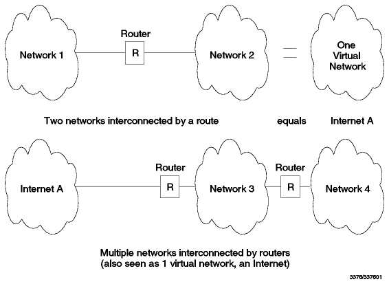
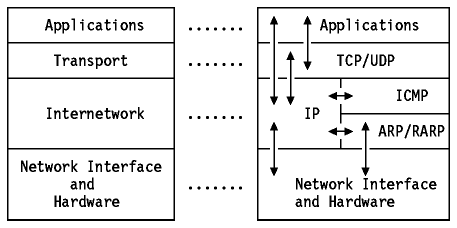
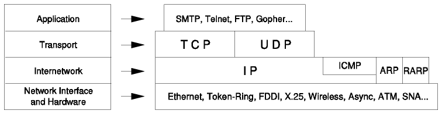
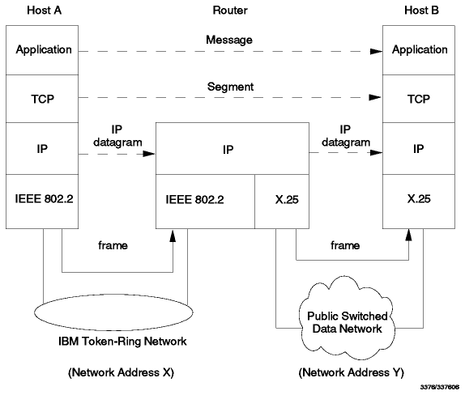

Table of Contents
Table of Contents  Architecture
and Protocols
Architecture
and ProtocolsTable of Contents Architecture
and Protocols
The TCP/IP protocol suite is named for two of its most important protocols: Transmission Control Protocol (TCP) and Internet Protocol (IP). Another name for it is the Internet Protocol Suite, and this is the phrase used in official Internet standards documents. We shall use the more common term TCP/IP to refer to the entire protocol suite in this book.
The first design goal of TCP/IP was to build an interconnection of networks that provided universal communication services: an internetwork, or internet. Each physical network has its own technology-dependent communication interface, in the form of a programming interface that provides basic communication functions (primitives). Communication services are provided by software that runs between the physical network and the user applications and that provides a common interface for these applications, independent of the underlying physical network. The architecture of the physical networks is hidden from the user.
The second aim is to interconnect different physical networks to form what appears to the the user to be one large network. Such a set of interconnected networks is called an internetwork or an internet.
To be able to interconnect two networks, we need a computer that is attached to both networks and that can forward packets from one network to the other; such a machine is called a router. The term IP router is also used because the routing function is part of the IP layer of the TCP/IP protocol suite (see Layered Protocols).
Figure - Internet Examples shows two
examples of internets.

Figure: Internet Examples - Two interconnected sets of networks,
each seen as one logical network.
The basic properties of a router are:
To be able to identify a host on the internetwork, each host is assigned an address, the IP address. When a host has multiple network adapters, each adapter has a separate IP address. The IP address consists of two parts:
IP address = <network number><host number>
The network number part of the IP address is assigned by a central authority and is unique throughout the Internet. The authority for assigning the host number part of the IP address resides with the organization which controls the network identified by the network number. The addressing scheme is described in detail in Addressing.
The TCP/IP protocol suite has evolved over a time period of some 25 years. We will describe the most important aspects of the protocol suite in this and the following chapters.
TCP/IP, like most networking software, is modelled in layers. This layered representation leads to the term protocol stack which is synonymous with protocol suite. It can be used for situating (but not for comparing functionally) the TCP/IP protocol suite against others, such as SNA and Open System Interconnection (OSI). Functional comparisons cannot easily be extracted from this, as there are basic differences in the layered models used by the different protocol suites.
The Internet protocols are modeled in four layers:

Figure: Architectural Model - Each layer represents a :q.package:eq.
of functions.
The actual interactions between the layers are shown by the arrows in
Figure - Architectural Model.
A more detailed ``layering model'' is shown in
Figure - Detailed Architectural Model.

Figure: Detailed Architectural Model
Forming an internetwork by interconnecting multiple networks is done by routers. It is important to distinguish between a router, a bridge and a gateway.
A bridge can be said to be transparent to IP. That is, when a host sends an IP datagram to another host on a network connected by a bridge, it sends the datagram directly to the host and the datagram ``crosses'' the bridge without the sending host being aware of it.
A router can be said to be visible to IP. That is, when a host sends an IP datagram to another host on a network connected by a router, it sends the datagram to the router and not directly to the target host.
Note: The term ``gateway'', when used in this sense, is not synonymous with ``IP gateway''.
A gateway can be said to be opaque to IP. That is, a host cannot send an IP datagram through a gateway: it can only send it to a gateway. The higher-level protocol information carried by the datagrams is then passed on by the gateway using whatever networking architecture is used on the other side of the gateway.
Closely related to routers and gateways is the concept of a firewall or firewall gateway which is used to restrict access from the Internet to a network or a group of networks controlled by an organization for security reasons. See Firewalls for more information on firewalls.
Incoming datagrams will be checked to see if the local host is the IP destination host:
In the internet protocol, outgoing IP datagrams pass through the IP routing algorithm which determines where to send the datagram according to the destination IP address.
This base algorithm, needed on all IP implementations, is sufficient to perform the base routing function.
As noted above, a TCP/IP host has basic router functionality included in the IP protocol. Such a router is adequate for simple routing, but not for complex networks. The protocols needed in complex cases are described in Routing Protocols.
The IP routing mechanism combined with the ``layered'' view of the TCP/IP
protocol stack, is represented in
Figure - Internet Router. This shows an IP
datagram, going from one IP address (network number X, host number A) to
another (network number Y, host number B), through two physical networks. Note
that at the intermediate router, only the lower part of the TCP/IP protocol
stack (the internetwork and the network interface layers) are involved.

Figure: Internet Router - The router function is performed by the IP
protocol.
 Addressing
Addressing